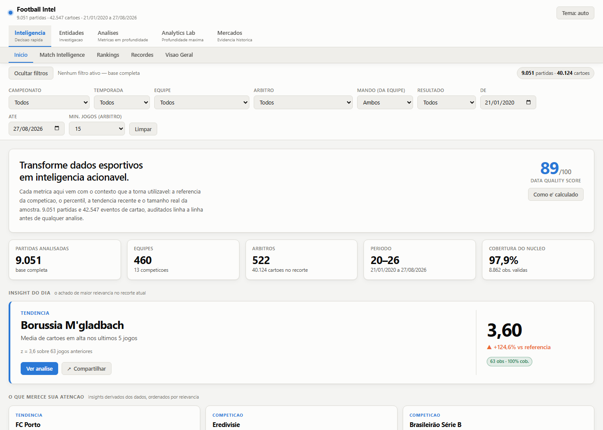
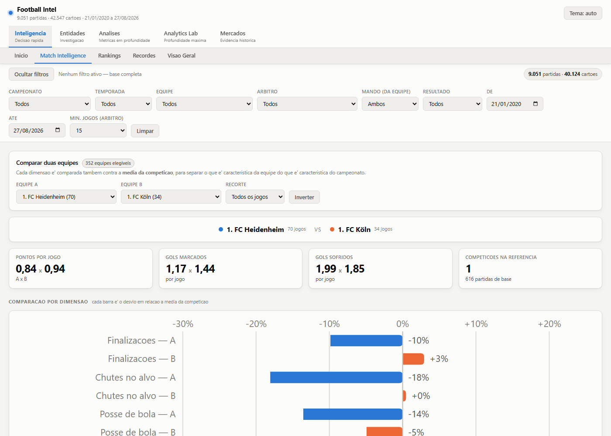
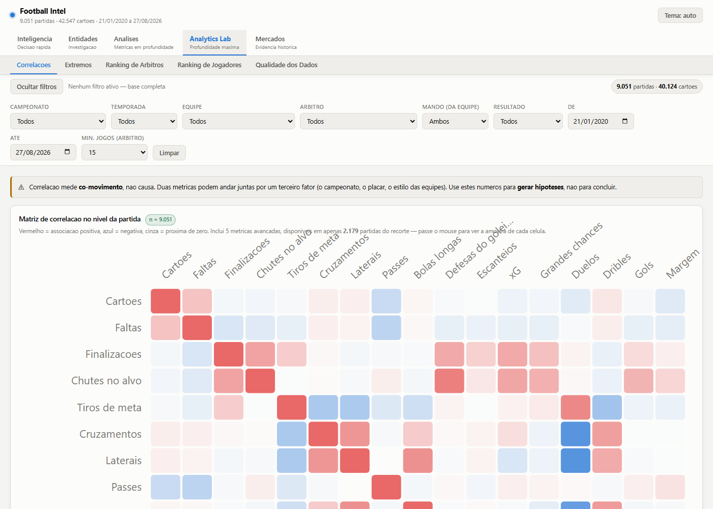

Project 01 — Case study
Football Intel
A sports intelligence platform built from scratch: a Python pipeline that audits and cleans the source data, a custom statistical engine running in the browser, and a 17-screen dashboard that works offline, with no server and not a single external dependency.
In active development
Matches audited row by row 13 competitions · 11 seasons
Individual card events 94.3% linked to their source match
Referees profiled 460 teams · 8,685 players
External dependencies in the dashboard No CDN · works offline
01 — The problem
A spreadsheet is not an analytical base
The starting point was a single Excel workbook holding results, match statistics and card events across thirteen competitions. Everything was in there — and nothing was queryable. Sheets had different shapes, names arrived with corrupted encoding, entire competitions were duplicated, and a round column had turned into an Excel serial date.
More importantly: even once cleaned, the data invites the wrong conclusion. Ranking referees by average cards looks obvious and is wrong — the average largely measures the league they work in, not the official. That set the goal for the product: not to display numbers, but to deliver every number with the context that makes it usable — competition benchmark, percentile, recent trend and true sample size.
02 — The product
17 screens, five decisions
The first version had 15 flat tabs. I reorganised them into five groups by depth of use — without removing a single analysis.

Every filter recomputes everything. The architectural rule is that the HTML receives the data, not the results: rankings, averages, last-five form, correlations and outlier thresholds are all computed in the browser over the filtered slice. Nothing is hard-coded — when the spreadsheet gains a season or a competition, it simply appears in the filters.


03 — Engineering
The decisions that define the project
1. A custom statistical engine, because approximation was not enough
The first version tested significance with |t| > 1.96 and used the
normal approximation for proportion intervals. That produces impossible bounds on
extreme proportions and ignores degrees of freedom. I moved all inference into a
single module — engine.js — that no screen can bypass:
| Routine | What it does | Why it matters |
|---|---|---|
| ibeta | Regularised incomplete beta (Lentz continued fraction) | Basis of the exact p-value |
| corr | Pearson + exact p + 95% CI via Fisher z + r² | Previously returned only r |
| welch | Welch with Satterthwaite df + 95% CI + Cohen's d | Correct df for unequal variances |
| propCI | Wilson interval for proportions | The normal yields bounds outside [0,1] |
| fdr | Benjamini-Hochberg correction | The product runs dozens of simultaneous tests |
2. Small samples are shrunk, not excluded
Referee rankings use empirical Bayesian shrinkage: an individual average is pulled toward the global mean with weight proportional to how few matches it rests on. Without it, a referee with three matches tops the ranking by chance. With it, they sit near the mean until enough evidence accumulates.
3. Quarantining metrics by distribution, not by row
In recent seasons the collector writes advanced statistics by position. When the provider omits one statistic for a match, every subsequent value slides one column — producing an xG of 94 in a Libertadores match, or successful tackles exceeding total tackles.
The defect is systematic per collection batch, not random per row. So validation judges the distribution of each metric within each competition and discards the whole combination when it is not compatible with football. The Brasileirão's xG (median ≈ 1.3) survives; the Libertadores' (median ≈ 94) is removed.
Row-by-row validation
3.4%
of metric × competition combinations would survive. The intuitive approach would destroy the entire advanced dataset.
Distribution validation
75.3%
339 of 450 combinations preserved, 111 discarded. The core metrics were untouched — they pass 100% of the integrity checks.
4. A hand-written charting library
Bars, columns, lines, scatter, heatmap, boxplot and sortable tables are custom SVG primitives with tooltips and highlighting. The reason is not purism: the dashboard has to open on a double click, with no server and no internet, and must not break because a CDN went down. The happy side effect was full control over accessibility — which is how it reached 67 of 67 charts described.
// Cards versus goal margin — how close the match was
corr(cards, margin) r = -0.1707 p < 1e-10
95% CI [-0.191; -0.151] n = 9,051
// Close matches (margin ≤ 1) versus decided ones (margin ≥ 3)
welch(≤1 vs ≥3) diff = 1.223 cards
df = 2176.8 95% CI [1.090; 1.357] d = 0.507
// Multiple-comparison correction
FDR (Benjamini-Hochberg) 36 pairs tested → 35 with p < 0.05
35 survive the correction04 — Findings
What the data showed
16.7%
of the variance in cards per match is explained by the referee (eta squared); the competition explains 7.4%. The remaining ~83% is match-specific — the referee conditions, it does not determine.
65%
gap between the most and least card-heavy competition — from 3.34 (Eredivisie) to 5.51 (Brasileirão Série B) per match. That is why a referee's raw average mostly measures their league.
−0.17
the correlation between cards and goal margin: how close the match is predicts cards better than total goals. Tight matches produce 1.26 more cards than decided ones.
9.7×
the excess of cards recorded at minute 90 versus what neighbouring minutes predict — stoppage time has no minute of its own. That is a collection limitation, not a football pattern.
05 — Data quality
What was broken and how it was handled
An audit report is regenerated on every build. Nothing is fixed silently.
| Problem | Evidence | Treatment |
|---|---|---|
| Corrupted encoding | BrasileirAo SArie A, MartAn Zubimendi |
Byte-level reconstruction applied iteratively. 100% of names recovered; zero orphan teams or referees afterwards |
| Duplicate matches | 929 repeated identifiers — two competitions duplicated in full | Deduplication by identifier and, where absent, by natural key. 1,084 rows removed |
| Round stored as serial date | 1900-01-05 values across a whole sheet |
Converted back to integer |
| Round codes 635/636 | Libertadores, Sudamericana, Champions and Europa League | Not an error — they are knockout-stage codes. Kept and flagged |
| Sentinel minute | 2,076 cards with minute = -5 |
Treated as unknown minute: excluded from time analyses, kept in counts |
Outliers were kept. A match with 12 cards is a real and informative event, not a typo — and there is a dedicated screen to isolate them. Dropping the extreme would erase exactly what is worth analysing.
06 — Analytical honesty
The limitations are part of the product
This is the section I am proudest of. The dashboard declares what it cannot answer — in the interface itself, not in a footnote.
Card minutes are censored
Stoppage time is recorded as 45' and 90'. Analyses by 15-minute band remain valid; the exact minute at those two points is not reliable, and the average last-card time is understated.
Advanced metrics cover ~24% of the base
Corners, xG, big chances and duels only exist in recent seasons. They cannot be used to compare seasons — and the dashboard says so wherever they appear.
Players are identified by name only
With no unique identifier, namesakes may be merged. And since the data carries no minutes played, cards per player-minute is not computable — rather than estimate it, the dashboard uses cards per match and states the trade-off.
Historical frequency is not future probability
The markets screen shows observed frequency, not forecast. The "fair odd" is the inverse of that frequency, with no margin, and exists for comparison — never as a recommendation. Every percentage carries a confidence interval, and there is no adjustment for team strength, line-ups or match stakes.
Declaring a limitation costs credibility in the short run and earns it in the long run. A dashboard that answers everything is a dashboard you can trust on nothing — and the discipline of separating what the data supports from what I would like it to support came straight from accounting, where signing off on a number has consequences.
07 — Verification
Measured, not claimed
Accessibility and responsiveness were audited at runtime, across all 17 screens.
| Item | Result |
|---|---|
SVG charts with role="img" and a title | 67 / 67 |
Table headers with scope and keyboard focus | 237 / 237 |
| Horizontal overflow at 500, 750 and 1006 px | 0 elements |
| Analytical engine cache hit rate | 77% |
| Deterministic share cards | 17 points |
Each chart's text description is generated from its own data when not supplied by hand — so the chart is described to a screen reader, not merely named.
What was not measured: viewports below 500 px. Headless Chrome enforces that minimum width, so 320–414 px are covered by CSS but unverified. I would rather record the limit of the test than present it as passed.
08 — In progress
What comes next
The project is in active development. In order of return on effort:
- A match identifier on the cards sheet (collection) — removes the 2,423 currently ambiguous links and unlocks per-match analysis over the full card base.
- Statistics written by name, not by position (collection) — recovers the 111 quarantined metric × competition combinations.
- A count model for cards — Poisson or negative binomial with referee, league and teams as covariates, turning historical frequency into conditional probability.
- Team strength via Elo — the product already showed that closeness predicts cards better than total goals; what is missing is a predictor of closeness itself.
- Unit tests for the statistical routines against reference values from R and scipy.
Technical debt I record myself
The dataset embedded in the HTML (2 MB) is fine offline but becomes a bottleneck if the base grows fivefold — the path is on-demand pagination per competition. One of the view files still runs to about a thousand lines and warrants another split. And the statistical routines are still validated by manual comparison rather than automated tests.